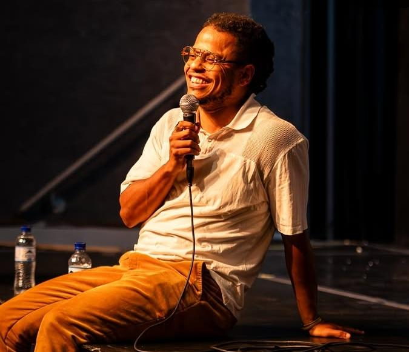

No Teatro Municipal, uma ópera histórica reposiciona a arte negra
Montagem de Porgy and Bess, apresentada entre 19 e 27 de setembro de 2025, reuniu elenco majoritariamente preto e construiu uma abordagem inédita que uniu dança urbana, pós-contemporâneo e crítica às representações tradicionais da obra.
A nova montagem de Porgy and Bess no Theatro Municipal de São Paulo ultrapassou a condição de acontecimento artístico e assumiu dimensões históricas. O palco mais tradicional da cidade recebeu uma ópera dirigida e protagonizada por artistas pretos, conduzida pela encenadora Grace Passô e pelo diretor de movimento e coreógrafo Mário Lopes, 45 anos. A ópera, escrita por George Gershwin, e estreada pela primeira vez em 1935, fala de desigualdade, misericórdia, alcoolismo, doenças, pobreza e do peso de uma liberdade recém-conquistada que não era liberdade de verdade, esse entendimento foi o ponto de partida para reconstruir a obra em cena.
“Não existe tecnicamente ‘o corpo certo’ para um movimento. Eu crio a partir do que o corpo me oferece...”
A releitura coreográfica rompeu com o estilo tradicional que costuma acompanhar montagens estrangeiras. Mário integrou danças urbanas brasileiras, krump, vogue, ballroom e também práticas autorais que já vinha desenvolvendo, como “kodex_konflikt”, “impurando movimento” e “salivar os nós”. O processo envolveu cerca de 30 bailarinos de formações muito distintas. “Não existe tecnicamente ‘o corpo certo’ para um movimento. Eu crio a partir do que o corpo me oferece, o bailarino não é um executor, ele constrói a gramática comigo”, resume.
A liberdade na sala de ensaio foi, segundo ele, essencial para que surgisse uma linguagem nova, e isso também significou rever cenas tradicionalmente montadas de forma repetida ao redor do mundo. A morte de Robbins, um personagem da ópera, por exemplo, deixou de expor violência de modo explícito para evitar a reprodução daquilo que o próprio Mário chama de “espetacularização da morte negra”, em vez disso, formou-se uma barreira coreográfica, como se o elenco armasse um escudo físico entre o público e o corpo caído. “Não faria sentido reforçar um imaginário que historicamente feriu-nos”, explica.
Nem tudo foi simples, o excesso de artistas em cena durante trechos dos spirituals criou problemas de acústica, o som dos passos atrapalhava o coro e a regência do maestro. O conflito técnico virou campo de invenção. Mário e os cantores negociaram, testaram novas dinâmicas e reorganizaram ritmos até encontrar uma solução que não apagasse a força performativa dos movimentos. “Cenicamente, algumas coisas funcionavam muito bem, mas precisávamos de uma gramática comum para que ninguém fosse atropelado pela cena”, conta.
Se no palco havia uma construção coletiva, na plateia também havia algo que fugia do padrão. Como a temporada foi aberta ao público, pessoas de perfis muito variados compareceram ao Municipal, especialmente na pré-estreia, quando familiares e amigos ocuparam boa parte dos assentos, uma das presenças mais comentadas foi a da escritora Conceição Evaristo, cuja passagem mobilizou elenco e público. Artistas descendo a escadaria junto dos espectadores, abraços cruzando fronteiras entre palco e plateia e uma vibração incomum ao final dos aplausos.
Dentre esses espectadores estava Thales Lopes Oliveira da Silva, consultor de vendas júnior 19 anos, sobrinho de Mário. Para ele, assistir à montagem tinha um peso particular, “esse lugar foi feito por nós, mas não para nós”, diz, lembrando a história de exclusão que marca o Municipal desde sua fundação, sustentado por mão de obra negra, mas frequentado por um público branco e elitizado. Sua avó, aos 69 anos, colocou os pés no teatro pela primeira vez justamente para ver a ópera, “É um sentimento de representatividade quase indescritível”, afirma.
A sensação de estar diante de um elenco sobretudo negro, comandado por um diretor de movimento também negro, marcou o jovem profundamente. “A gente estava em maioria em um espaço feito para gente branca, isso foi o que mais me marcou”, conta. Para ele, orgulho e felicidade dominaram a experiência, o momento que repetiria? Os aplausos finais. “Ver um monte de gente branca aplaudindo a arte que o povo preto é capaz de fazer é muito satisfatório.”
O impacto da obra, no entanto, não se limitou ao público, para Mário, o processo também significou enfrentar as próprias fronteiras da criação preta em espaços historicamente marcados por hierarquias. Ele se lembra de bailarinos sugerindo movimentos ou propondo variações improvisadas que mudavam o rumo das cenas. “A coreografia reage ao corpo, eu sigo o fluxo do que aparece. Nada é rígido”, afirma. A presença de artistas estrangeiros, segundo ele, foi absorvida por essa lógica, o que importava não era estilo ou currículo, mas a organicidade gestual que cada corpo trazia do seu cotidiano.
O resultado não buscou ilustrar uma ideia de “dança negra”, mas questionar noções de autoria, técnica e pertencimento. Em várias passagens, a fisicalidade dos corpos tensionava o texto original, abrindo espaço para novas leituras da dramaturgia. “Se a gente não tem dados, o que a gente tem é o corpo, e, o corpo sempre sabe”, resume o coreógrafo, em uma de suas falas mais citadas ao longo do processo.

A montagem brasileira de Porgy and Bess não apresentou uma versão definitiva da obra, mas uma interpretação situada, construída na fricção entre história, prática e memória, para muitos espectadores, o mais potente não foi apenas ver pessoas negras performando personagens negras, mas testemunhar essas presenças ocupando, com competência técnica e liberdade estética, um dos lugares mais simbólicos da cultura paulistana.
“É uma conquista que representa um avanço para a história negra no Brasil”, diz Thales. Já Mário resume o processo de forma simples, “não queríamos encaixar o corpo preto na forma da ópera. Queríamos deixar a ópera ser modificada pelo nosso corpo.” No Municipal, pela primeira vez para muita gente, essa transformação pôde ser vista, sentida e aplaudida.